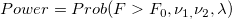
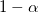
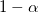

/math-7617376c4ee07c377351181ae25399e6.png "F\,\!") は、非心 の分布です。
は、非心 の分布です。一般的に、ANOVAを実行する際には、特定のサンプルサイズ、または指定された検出力レベルのサンプルサイズで検定の検出力を知りたいと考えます。XファンクションPSS ANOVA1は、検出力とサンプルサイズの両方を計算したいときに使用されます。
検出力計算のアルゴリズム
各グループは同じサイズであると仮定します。検出力計算の式は次式で表されます。

ここで、 は、非心 の分布です。
/math-b5125928794db12addea5ab0c4bfc6aa.png "F_0=F_{(1-\alpha ,\nu _{1,}\nu _2)}") ,
, /math-ae5787f61ff2a77a8838833e09777396.png "\nu _1 \,\!") および
および /math-d098596001dd1926cb1e564b8bdb9507.png "\nu _2 \,\!") 自由度のF分布の四分位
自由度のF分布の四分位
/math-6018d1bd33adfeb87c574f013fe2c86d.png "\nu _1=r-1 \,\!") は、分子の自由度
は、分子の自由度
は、分母の自由度
/math-58b7fc3474b021ff11c1a0df58a54060.png "n \,\!") はグループi ごとの数
はグループi ごとの数
/math-a01b83d7a33164700942b4b74732fd96.png "r \,\!") はグループの数
はグループの数
/math-6988616b360131d0eea0de525ed128d6.png "\lambda =\frac{n*CSS}{S^2}") は非心パラメータ
は非心パラメータ
/math-ee00b45dc165537d6c2e65b1cb765ff9.png "\mu _g \,\!") はi 番目のグループの平均
はi 番目のグループの平均/math-74b8eddf4b37de80c7c8eed1b64e46fc.png "\mu \,\!") は全体の平均
は全体の平均/math-5c9f6395bcfef917a121d7b046c62780.png "S^2 \,\!") 平均二乗誤差によって推定
平均二乗誤差によって推定